T.A.L.O.N.
PDF-ready operating guide for the PySide6 client desktop.
The client desktop is the field operator interface for TALON. It unlocks a local encrypted database, enrolls to a server with a one-time token, syncs operational data over Reticulum, and provides map, reporting, mission, assignment, chat, document, and profile workflows without exposing server-only administration pages.
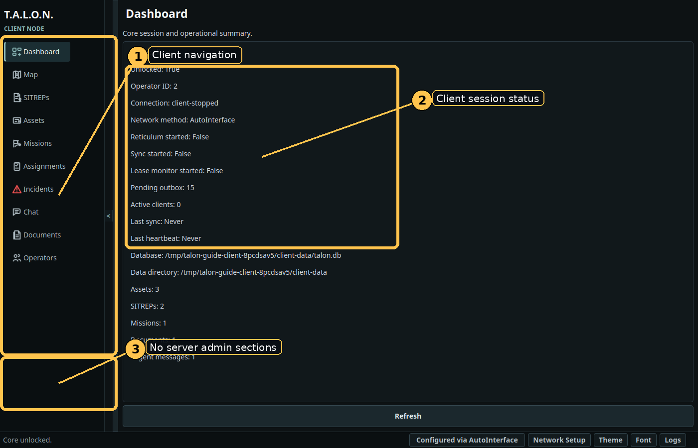
Use the client-specific Linux package. The installer reads the role marker from the artifact and creates a client launcher.
tar -xzf talon-desktop-client-linux.tar.gz cd talon-desktop-client-linux bash ./install.sh --yes
$XDG_DATA_HOME/talon/talon-desktop-client-linux or ~/.local/share/talon/talon-desktop-client-linux.~/.local/bin/talon-desktop-client.talon-desktop-client.desktop named T.A.L.O.N. Client.~/.talon.~/.talon/talon.ini.~/.talon/reticulum/config.DELETE TALON DATA.Start talon-desktop-client and unlock the local database. Network setup becomes available after unlock.
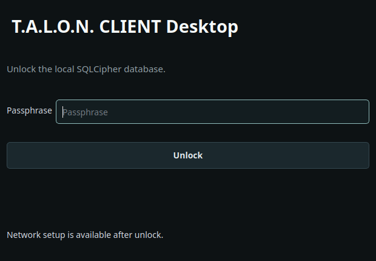
Open Network Setup after unlock. Use the template that matches your deployment, validate the config, save it, and restart if Reticulum was already running.
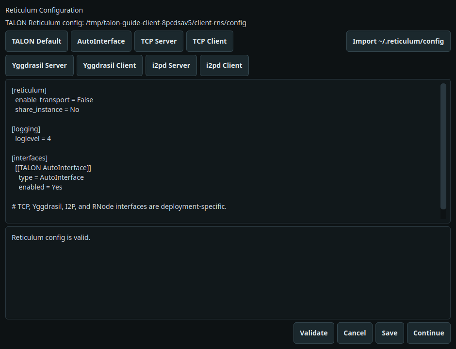
Before a client can sync, a server operator must generate a one-time token. Paste the full TOKEN:SERVER_HASH value, enter your callsign, and select Enroll Client.
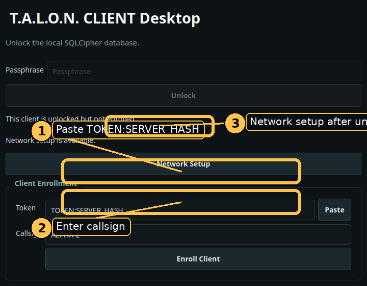
TALON uses a local encrypted data model and Reticulum network transport. The UI collects operator input; the core session owns unlock, crypto, sync, enrollment, lease, revocation, and document handling.
*.identity.enc files derived from the unlocked database key.talon.server.The Dashboard shows unlock state, local operator id, connection state, network method, pending outbox count, last sync and heartbeat timestamps, local paths, and operational record counts.
The Map page displays operational overlays and selectable base layers. Operators can focus by mission, select assets or map items, filter visible assets, and create a map-centered ROUTINE SITREP with Report Here.
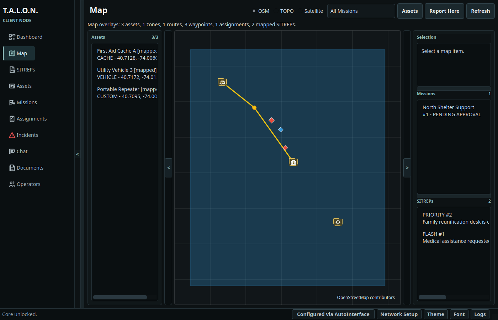
Clients can create SITREPs with severity, status, template, mission, assignment, asset, location label, native coordinates, precision/source, sensitivity, and body. Clients can acknowledge, assign, close, link documents, and create linked incidents. Server-only delete is not shown in client mode.
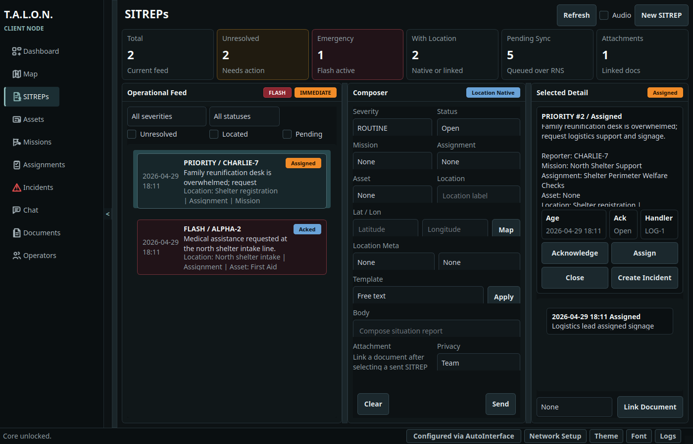
Clients can create and edit assets, pick coordinates on the map, and request deletion. Asset verification is allowed only when policy permits the current operator to verify an asset they did not create; the server can always verify.
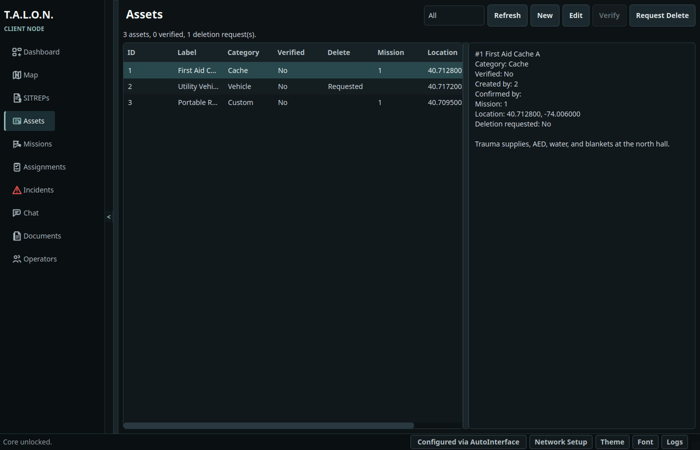
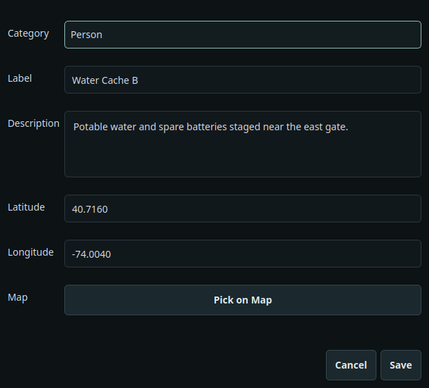
Clients can submit mission requests with requested assets, AO polygons, routes, timing, support notes, constraints, objectives, and key locations. Client-created missions are submitted for server approval before becoming active.
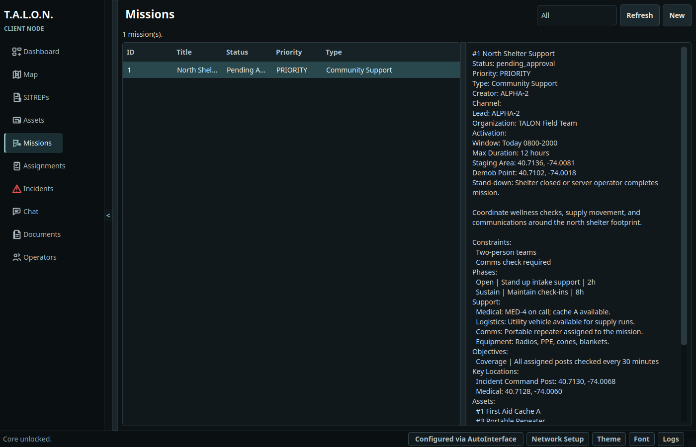
The Assignments board shows active assignments, operator status, overdue/support indicators, recent check-ins, and linked incidents. Clients can create assignments, check in, and open linked incidents.
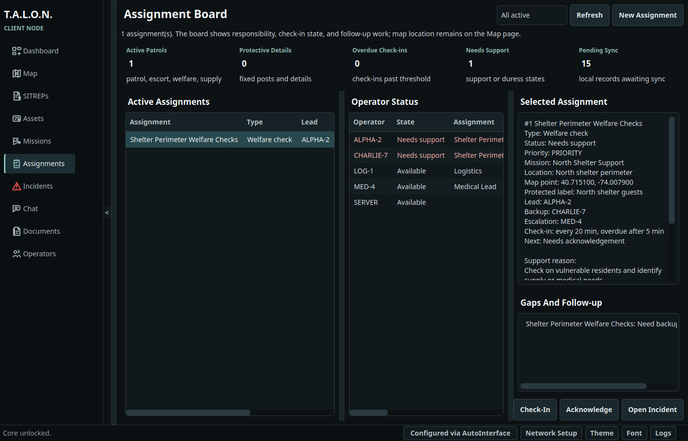
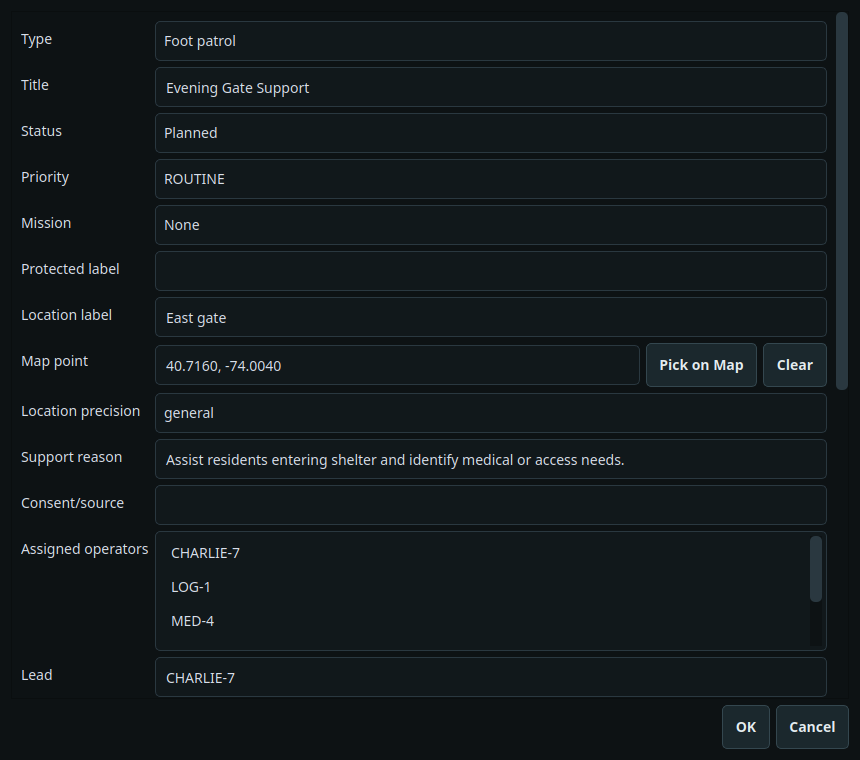
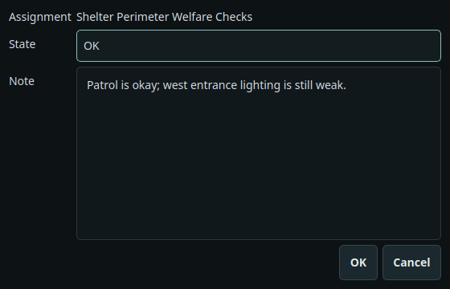
Clients can file structured incident reports with category, severity, title, location, notified services, follow-up flag, narrative, actions taken, outcome, and links to assignments, missions, assets, and SITREPs.
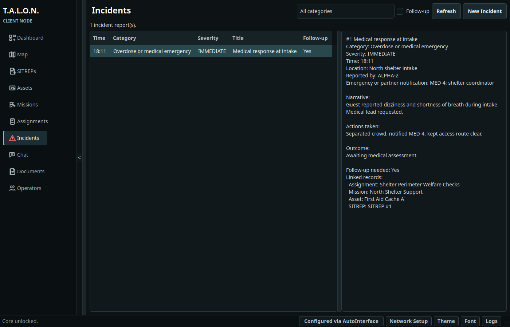
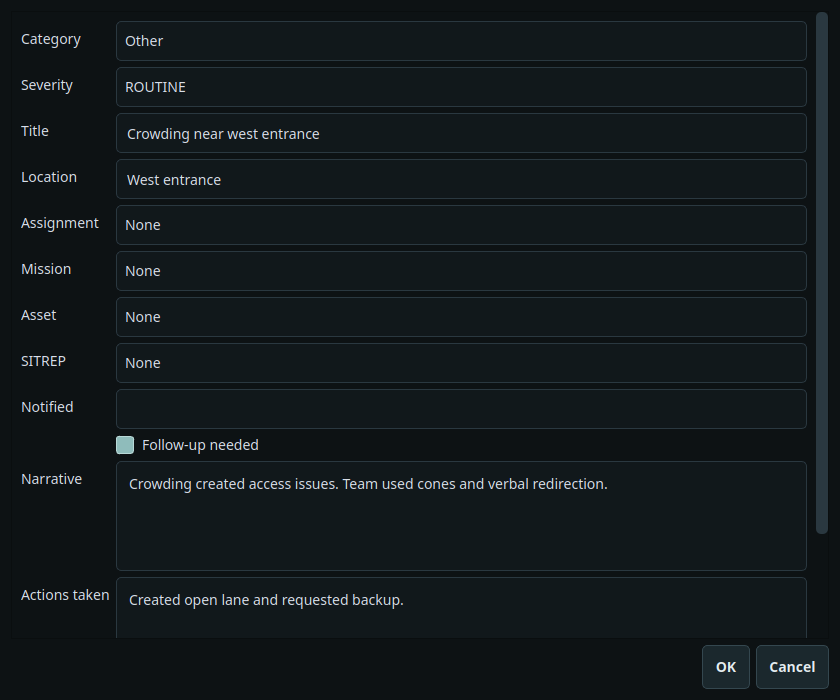
Clients can use default, mission, custom, and DM channels. The composer supports urgent messages and grid-reference attachments from assets, zones, waypoints, and SITREP locations. Delete controls are server-only.
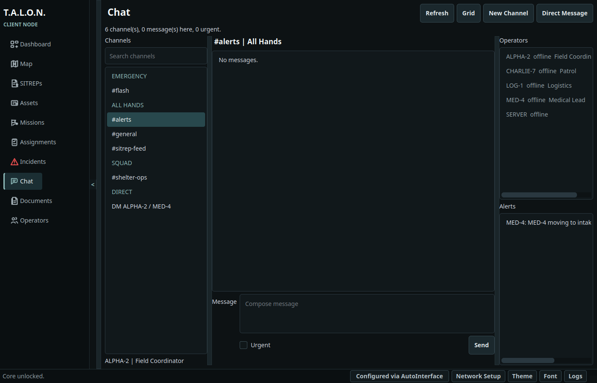
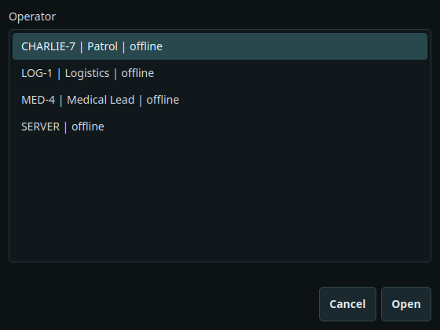
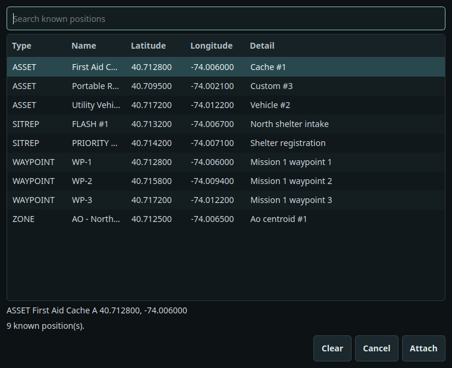
Clients receive synced document metadata and can download documents through the active sync session. Upload and delete are server-only; the client UI displays that restriction directly.
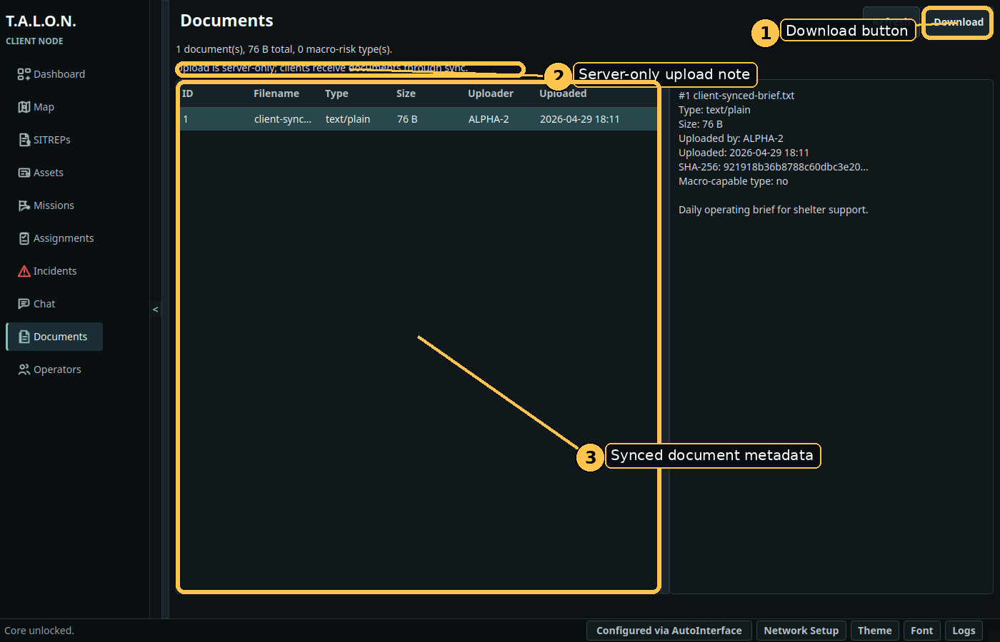
The Operators page shows the local operator roster and lets a client edit its own profile when permitted. Profile editing includes display name, role, notes, predefined skills, and custom skills.
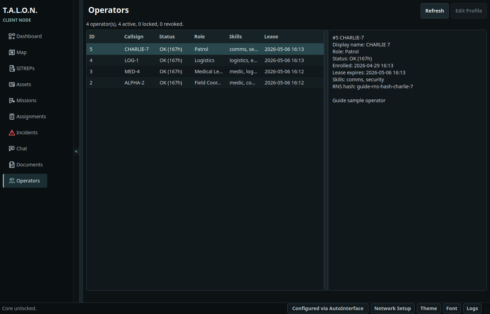

If the server revokes the operator or the lease state requires a lock, the client presents a modal lock window and stops normal operation until the condition is resolved or the operator quits.
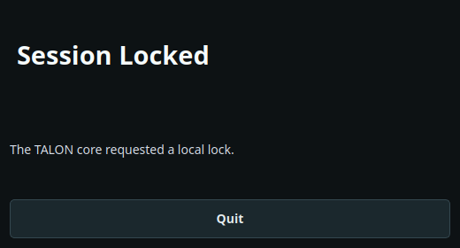
| Issue | Action |
|---|---|
| Enrollment fails. | Confirm the server token is unexpired, the full TOKEN:SERVER_HASH value was pasted, and Reticulum can reach the server. |
| Document download fails. | Client downloads require an active sync session. Confirm the client is enrolled and connected. |
| Upload button is unavailable. | This is expected in client mode. Server mode owns document upload and delete. |
| Operator is locked or revoked. | Contact the server operator for lease renewal or re-enrollment guidance. |
| Direct TCP warning appears. | The active transport is direct TCP. Use Yggdrasil, I2P, LoRa, or a trusted VPN when address privacy matters. |